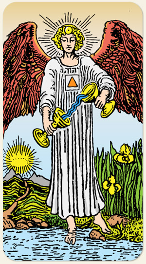

O equilíbrio, a paciência e a mistura alquímica. Ela ensina a arte de combinar elementos diferentes, como a razão e a emoção, ou o trabalho e o lazer, para criar uma vida harmoniosa. É o arquétipo do curador interno que sabe que o caminho do meio é o que leva à estabilidade.
Simboliza o espírito saindo do corpo após a morte e vendo o mundo espiritual, o caminho aponta para a importância de lembrar-se de onde veio. Um pé na água e outro na Terra representa o equilíbrio entre o mundo das emoções/intuição e o mundo material/prático.
O Anjo: Representa a alma e o "Eu Superior". É uma figura andrógina, simbolizando a união dos gêneros e a superação das dualidades humanas.
Os Dois Cálices: Simbolizam a mente consciente e o subconsciente. O ato de despejar o líquido de um para o outro representa a mistura alquímica e a transferência constante de energia.
A Água "Subindo": O fluxo de água entre os cálices desafia a gravidade, simbolizando que através da temperança e da paciência, podemos elevar nossa natureza e realizar o que parece impossível.
Um Pé na Água e Outro na Terra: Representa o equilíbrio entre o mundo emocional/espiritual (água) e o mundo físico/material (terra). Indica a necessidade de estarmos "aterrados" enquanto exploramos nossas emoções.
O Triângulo no Peito: O triângulo (espírito) dentro de um quadrado (matéria) nas vestes do anjo simboliza a presença da centelha divina dentro da estrutura do corpo humano.
Positivo: Salvação, ressurreição, proteção e auxílio, tanto físico quanto espiritual, renascimento, equilíbrio entre o material e o espiritual.
Negativo: A ajuda que não chega, não haverá outra oportunidade, perdas, situações que não têm mais como remediar, o lobo em pele de cordeiro, o Anjo Mau no ombro, maus conselhos, desequilíbrio.
Símbolos: Anjo, Cálice, Água, Triângulo, Flores (Íris), Caminho, Montanha, Sol, Asas Vermelhas, Auréola, Postura Frontal.
Cores: Vermelho, Amarelo, Verde, Azul, Cinza, Branco.
Signos:
Elemento: